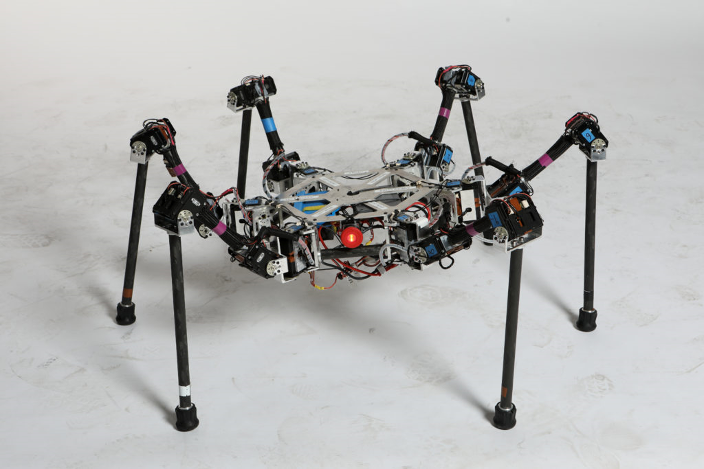

Climbing Between Irregular or Angled Walls
Introduction
SiLVIA (Six Legged Vehicle with Intelligent Articulation) is a hexapod robot designed for robotics research. It is developed between 2017 and 2019 at the Robotics and Mechanisms Laboratory (RoMeLa), UCLA. While SiLVIA has a conventional hexapod configuration, its exceptional strength and stability enable unique capabilities, such as climbing between two walls, distinguishing it from typical hexapod robots.
This project led to the publication of over five papers, including one that received the Best Paper Award in Safety, Security, and Rescue Robotics at IEEE IROS 2019. SiLVIA was also featured in the Global Safe City Seoul Promotional Video, titled "What makes Seoul a safe city in the post-COVID-19 era?", produced by the Seoul city government.

Robot Capabilities
Climbing with Obstacle Avoidance Using Mixed-Integer Programming
Fast and Risky Tripod Climbing Modeled by Gaussian Process
Non-Traditional Gait Planned Using Complementary Constraints
Climbing Inside Tubes for Inspection
Climbing While Avoiding Low-Friction Contacts Modeled by Gaussian Process
Publications
Optimization Based Motion Planning for Multi-Limbed Vertical Climbing Robots
2019 IEEE/RSJ International Conference on Intelligent Robots and Systems (IROS)
Best Paper Award on Safety, Security, and Rescue Robotics
Multi-Limbed Robot Vertical Two Wall Climbing Based on Static Indeterminacy Modeling and Feasibility Region Analysis
2018 IEEE/RSJ International Conference on Intelligent Robots and Systems (IROS)
Risk-Aware Motion Planning for a Limbed Robot with Stochastic Gripping Forces Using Nonlinear Programming
2020 IEEE/RSJ International Conference on Intelligent Robots and Systems (IROS)/IEEE Robotics and Automation Letters 5 (4), 4994-5001
Transition Motion Planning for Multi-Limbed Vertical Climbing Robots Using Complementarity Constraints
2021 IEEE International Conference on Robotics and Automation (ICRA)
Designing Multi-Stage Coupled Convex Programming with Data Driven McCormick Envelope Relaxations for Motion Planning
2021 IEEE International Conference on Robotics and Automation (ICRA)
Awards and Recognition
We are honored to have our research on SiLVIA recognized with the Best Paper Award in Safety, Security, and Rescue Robotics at IEEE/RSJ International Conference on Intelligent Robots and Systems (IROS) 2019.
Recognition in Academic Literature
SiLVIA has been recognized in academic literature for its innovative hardware and algorithms, enabling it to climb angled walls, navigate uneven surfaces, and avoid obstacles—capabilities rarely demonstrated by other wall-climbing robots. Notably:
- "Conventional, Heuristic and Learning-Based Robot Motion Planning: Reviewing Frameworks of Current Practical Significance" (Machines, 2023)
- "Trends in the Control of Hexapod Robots: A Survey" (Robotics, 2021)
Media Exposure
SiLVIA was featured as a firefighter robot in the Global Safe City Seoul Promotional Video, titled "What makes Seoul a safe city in the post-COVID-19 era?", produced by the Seoul city government.
Contributors
Xuan Lin (Project Lead)